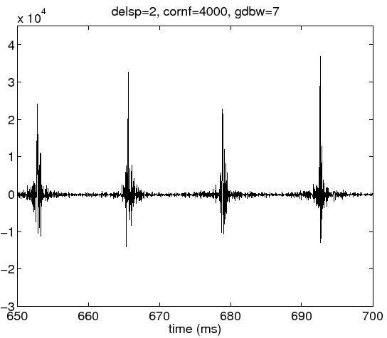
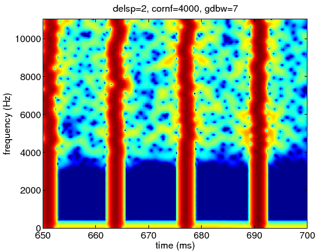

Next: How to assign the
Up: Parameter: groupDelaySpatialBandWidth (*)
Previous: Parameter: groupDelaySpatialBandWidth (*)
The temporal spread is visible when the bandwidth is set 7 Hz,
even though the group delay standard deviation parameter is kept same.
Figure 16:
Waveform of the excitation source signal when the spatial frequency
bandwidth is 7Hz.
|  |
The cloud like time-frequency spread is denser than default.
The energy trajectory along the frequency axis does not seem to
have smaller deviations.
Figure 17:
Spectrogram of the excitation source signal when the spatial frequency
bandwidth is 7Hz.
|  |
Next: How to assign the
Up: Parameter: groupDelaySpatialBandWidth (*)
Previous: Parameter: groupDelaySpatialBandWidth (*)
Hideki Kawahara
2007-05-05